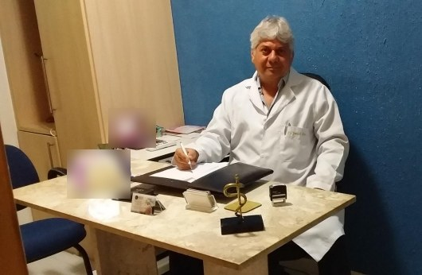

Início · Onde atendo
Onde atendo: Itaigara, sala 410, e teleconsulta.
Av. Antônio Carlos Magalhães, 429, Centro Empresarial Itaigara Sul, sala 410, Salvador. Atendimento com hora marcada: agende pelo WhatsApp (71) 98628-9981 ou pelo telefone (71) 3358-5454.
Onde fica
Endereço
Consultório do Dr. Jarbas Santos Dultra
Av. Antônio Carlos Magalhães, 429 · Centro Empresarial Itaigara Sul, sala 410 · Itaigara · Salvador – BA
É o endereço da ficha do Google e do perfil na Doctoralia. Ao chegar ao prédio, informe na recepção que a consulta é na sala 410.
Agendamento
Como agendar
- Mande uma mensagemPelo WhatsApp (71) 98628-9981 ou ligue para (71) 3358-5454.
- Combine dia e horárioO atendimento é com hora marcada: a equipe confirma a data, o horário e, se for o caso, o seu plano de saúde.
- Leve o que tiverExames anteriores, a lista de medicamentos e as suas dúvidas anotadas.
Os dias de atendimento e os planos aceitos são confirmados pela equipe ao agendar.
Online
Teleconsulta
Segundo a Doctoralia, o Dr. Jarbas oferece atendimento online. A teleconsulta é feita por vídeo e serve bem para mostrar exames, tirar dúvidas, acompanhar um tratamento ou fazer uma primeira conversa.
Quando o caso pede exame físico, como o preventivo ou o exame ginecológico, a consulta é presencial. A equipe orienta qual formato faz sentido para você.
Funciona bem para
Mostrar e discutir exames, retornos, renovação de orientações e dúvidas sobre um tratamento em curso.
Pede consulta presencial
Preventivo, exame ginecológico ou das mamas e queixas que precisam ser examinadas.
Rota
Mapa e rota
Sala 410
O consultório

Um consultório sóbrio, de parede azul, onde a consulta começa pela conversa. Você pode vir acompanhada, se preferir.
Preparo
O que levar à consulta
- Documento de identidade e carteira do plano, se for usar.
- Exames recentes: preventivo, mamografia, ultrassonografias e exames de sangue.
- A data da última menstruação.
- A lista dos medicamentos que você usa.
- No pré-natal, o cartão da gestante e os exames anteriores.
- As suas dúvidas, anotadas.
Sangramento vaginal intenso, dor pélvica forte e súbita, sangramento ou perda de líquido na gestação: procure o pronto-socorro mais próximo ou o SAMU (192).
Dúvidas frequentes
Perguntas comuns
Qual é o horário?
O atendimento é com hora marcada. Os dias e horários são confirmados pela equipe ao agendar.
Ele aceita plano de saúde?
Confirme o seu plano com a equipe antes da consulta, pelo WhatsApp ou pelo telefone.
Quanto custa a consulta?
Os valores e as condições de atendimento são informados pela equipe, pelo WhatsApp ou pelo telefone.
Agende
Uma consulta com o Dr. Jarbas, no Itaigara ou por teleconsulta.
Atendimento com hora marcada na sala 410 do Centro Empresarial Itaigara Sul. Fale pelo WhatsApp (71) 98628-9981 ou pelo telefone (71) 3358-5454.